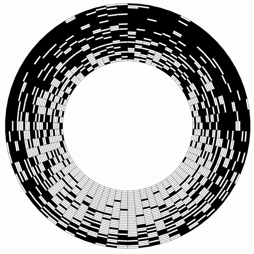
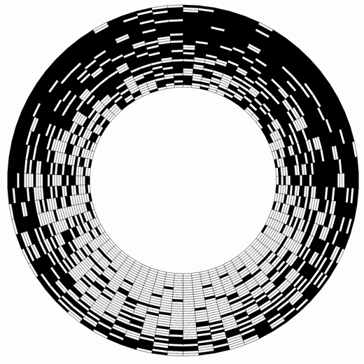

Supervisitor is a concept album created with the Microbrute synthetiser by Arturia.
The album was released during the event dodecae in Toronto.
09O13— Supervisitor Release
The album was released during the event dodecae in Toronto.
09O13 — Supervisitor Release